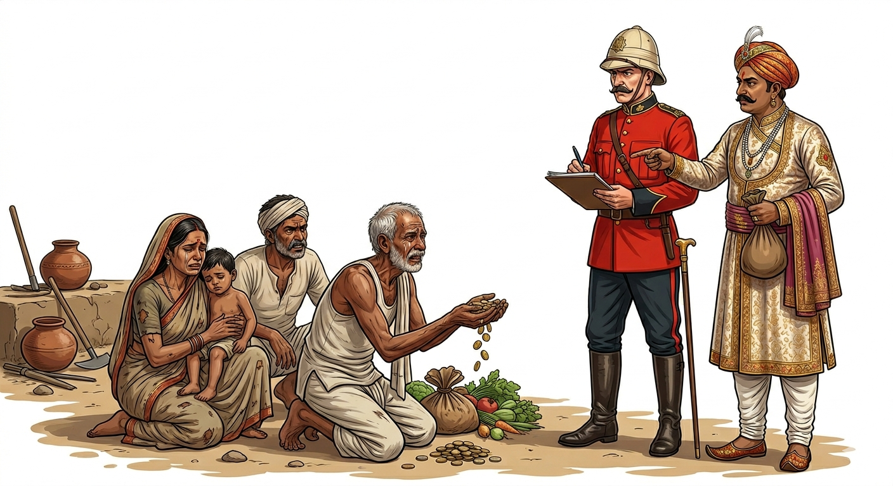
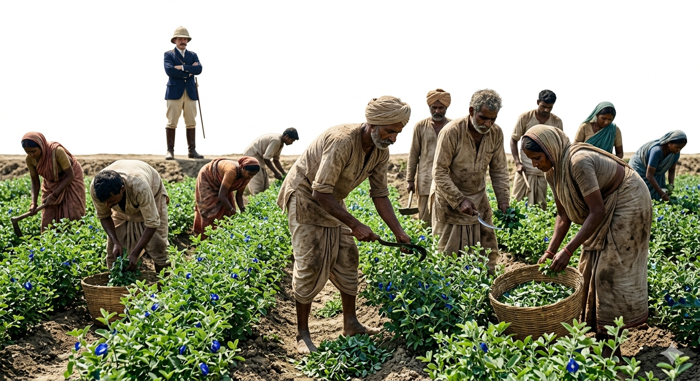
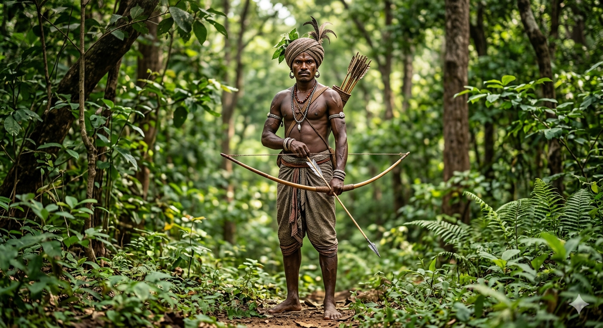

Before the advent of the British East India Company, rural life in India was simple and self-sufficient. The English came as traders but gradually conquered India and became its masters. Unlike previous rulers who assimilated, the British totally shattered the traditional self-sufficient rural economy. Their primary aim was economic exploitation, which resulted in the ruin of the peasantry, the uprooting of tribals, and the destruction of Indian trade and handicrafts.
2. Colonial Agrarian Policy and Land Revenue Systems
As the British empire expanded, land revenue became the biggest source of income for the Company. To maximize and guarantee this income, they introduced several Land Revenue Settlements. These systems were primarily designed to legitimize economic exploitation.
A. Zamindari System (Permanent Settlement)
Introduced by: Lord Cornwallis in 1793.
Areas Covered: Bengal, Bihar, and Orissa.
Key Features: Zamindars (landlords, rajas, and taluqdars) were made the hereditary owners of the land.
Revenue Share: The Zamindars were forced to pay 89% (or 10/11th) of the total revenue to the British government and kept 11% (or 1/11th) as their own share.
Impact on Peasants: Peasants lost their land rights and became mere tenants. Zamindars used oppressive methods to collect taxes. Cultivators had to take loans from moneylenders to pay rent, leading to a miserable life and frequent evictions.
B. Ryotwari System
Introduced by: Thomas Munro in 1820.
Areas Covered: South India and later the Bombay area.
Key Features: A direct settlement was established between the government and the ryots (cultivators). Ownership rights were given directly to the peasants.
Revenue Share: The rates were excessively high (50% for dry lands and 60% for irrigated lands).
ImportantThe Ryotwari Trap:
Under the Ryotwari System, the tax was based on the potential of the soil, not the actual produce. Farmers were brutally forced to pay revenue even when crops failed entirely due to floods, droughts, or natural calamities.
C. Mahalwari System
Introduced by: Holt Mackenzie in 1822.
Areas Covered: Gangetic Valley, North-West provinces, Central India, and Punjab.
Key Features: A collective settlement was made with a group of villages called a Mahal. The village community owned the land, forests, and pastures collectively.
Revenue Share: The villages were jointly responsible for the payment of land revenue levied on the produce of a Mahal.
Impact: It proved to be a curse. The exorbitant demands led to the impoverishment and eviction of peasants, causing widespread resentment that contributed to the Revolt of 1857.

Figure 1: Distressed peasants under the exploitative land revenue systems of the British and Zamindars
3. Growth of Commercial Crops
The East India Company used coercive methods to force farmers to grow cash crops that were in great demand in Europe, buying them at artificially low rates.
Indigo: Demanded by textile industries in Britain. Peasants were forced to grow it but were paid extremely low prices.
Opium: Grown in Bengal, Bihar, and Punjab. The British smuggled and sold it to China for massive profits.
Sugarcane: The rising demand for sugar in the West led to the setup of sugar plantations. Farmers were forced to sell thickened sugarcane juice at low prices to British factories instead of making local gur (jaggery).
Other Crops: Cotton (Gujarat, Maharashtra), Tea (Assam, West Bengal), and Pepper (Kerala, Tamil Nadu).
ConceptCommercialisation of Agriculture:
It is the process of introducing a new product or shifting agricultural focus from growing food crops for self-consumption to growing cash crops solely for the market to earn maximum profit.
4. Revolts by Farmers
Exploitation, heavy taxation, indebtedness, and forced commercialization led to massive mass outbursts and rebellions by peasants against the British and Zamindars.
Blue Rebellion (1859): The ryots of Bengal violently refused to grow indigo.
Moplah Rebellion (1860s & 1870s): Moplahs of South India revolted against the increasing burden of taxation.
Deccan Riots (1875): Turned violent due to extreme rural indebtedness.
Champaran Movement (1860-1920s): Peasants in north-west Bihar opposed the forced cultivation of indigo and high taxes.
Oudh Kisan Sabha (1920): Formed under the leadership of Jawaharlal Nehru to organize peasant resistance.

Figure 2: Forced cultivation of Indigo by Indian peasants for European markets
5. Colonialism and Tribal Societies
After exploiting the peasants, the British targeted the tribal communities. Tribals lived in deep forests, practicing shifting cultivation, hunting, and herding, leading a self-sufficient life intricately tied to the forest.
Impact on Tribal Life
Loss of Power: Tribal chiefs lost all their traditional powers and were forced to follow laws made by British officers.
Forest Laws: The British restricted shifting cultivation to easily control the tribals. They declared most forests as state property, especially "Reserved Forests" which produced valuable timber.
Displacement: Tribals were evicted from their homes and forced to search for alternative livelihoods, leading to a shortage of laborers for the British to cut trees for railway sleepers.
Exploitation by Traders: Traders and moneylenders offered cash loans but paid peanuts for tribal products. For instance, Santhals of Hazaribagh reared silkworms and were paid just Rupees 3 for 1000 cocoons by traders who sold them at five times the price.
FactTribal Occupations: The Khonds of Orissa practiced shifting cultivation. The Van Gujjars of the Himalayas and Gaddis of Kullu lived by herding animals. The Mundas of Chotanagpur had a system where land belonged to the entire clan equally.
6. Tribal Revolts
The unjust forest laws and ruthless exploitation by middlemen led to fierce tribal rebellions across India.
Khasi Revolt (1829): In north-west Assam, chiefs united under Bar Manik and Tirut Singh against the construction of a British road through their land.
Santhal Rebellion (1855-1856): Led by Sidhu and Kanhu Murmu against the ruthless exploitation of traders and middlemen when the British government failed to protect them.
Birsa Munda Movement (1895-1900): A young boy, Birsa Munda, emerged as a hero in Chotanagpur. He urged tribals to keep working on their own land. He raised a white flag as a symbol of 'Birsa Raj' and instigated the tribals to attack zamindars. He died in 1900.

Figure 3: Birsa Munda, the legendary tribal hero who led the movement in Chotanagpur
7. Effects of Colonialism on Crafts and Modern Industries
Before the British, India was world-renowned for its handicrafts, calico, muslin, silk, and metal works. In the 17th century, India exported large quantities of these goods.
De-industrialisation of India
To safeguard the British cotton industry, Indian silk and cotton textiles were systematically destroyed.
The British imposed very heavy duties on Indian goods.
They flooded the Indian market with cheap, machine-made articles from Britain, fueled by the Industrial Revolution (1760-1830).
Indian craftsmen and artisans lost princely patronage and were forced to give up their traditional livelihoods.
Rise of Modern Industries in India
Due to the national movement and international developments, modern industries slowly emerged in India.
Plantations: Tea became the biggest plantation industry in Assam, Bengal, and South India. Other plantations included coffee, rubber, and Cinchona (used to manufacture quinine for malaria).
Heavy Industries: The expansion of railways increased the demand for coal, iron, and steel. The visionary Jamshedji Tata established the Tata Iron and Steel Company.
Post-Independence: Although industries like cotton, jute, and cement grew, India still had to import machinery. True focus on basic/key industries only started after India gained independence.